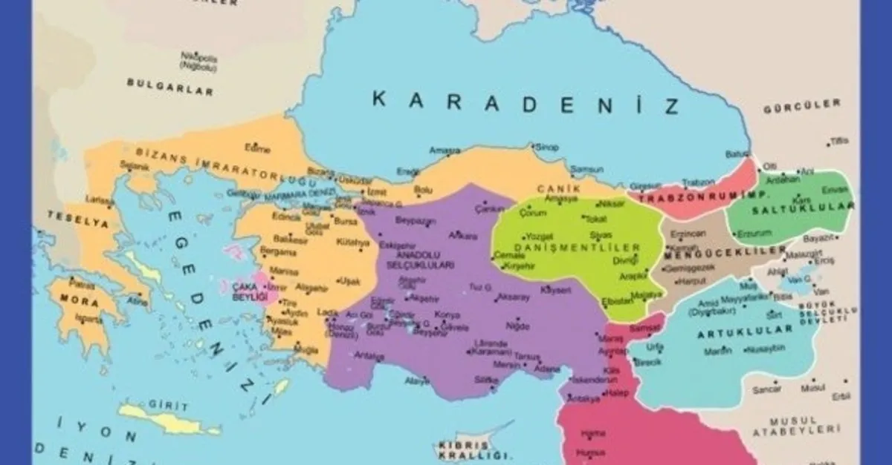
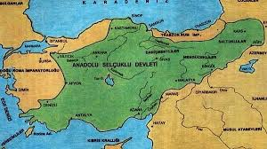

12. Yüzyıl: Türklerin Anadolu'daki Güçlenmesi
1055: Selçuklu’nun Bağdat Seferi
Abbasi Halifeliği'ne Destek
1055 yılında, Selçuklu Sultanı Tuğrul Bey Bağdat Seferi’ni gerçekleştirerek Abbasi Halifeliği'ni koruma altına aldı. Bu zafer, Selçukluların İslam dünyasında dini liderlik pozisyonuna yükselmesine ve Abbasi Halifesi tarafından “Doğu ve Batının Sultanı” olarak ilan edilmelerine yol açtı.
1100'ler: Danişmentliler ve Bizans'a Karşı Mücadeleler

Anadolu'nun Türkleşmesi İçin İlk Adımlar
Danişmentliler, 11. ve 12. yüzyıllarda Bizans'a karşı birçok zafer kazanarak Anadolu'da Türk hakimiyetini pekiştirdi. 12. yüzyıl başlarında Amasya, Tokat gibi şehirleri alarak Bizans’ın Anadolu'daki egemenliğini ciddi şekilde sarsmışlardır. Bu fetihler, Anadolu'daki Türk varlığının güçlenmesini sağlamıştır.
1086: Selçukluların Anadolu’daki Genişleme Hareketi

Konya'nın Başkent Yapılması ve Genişleme
Selçuklu Sultanı I. Kılıç Arslan, 12. yüzyılın başında Anadolu’daki Bizans topraklarına yönelik fetihlerini sürdürdü. 1086 yılında Konya'nın başkent yapılması, Selçuklu Devleti'nin Anadolu'da kökleşmesini sağlamış ve önemli bir kültürel ve siyasi merkez haline gelmiştir.
1116: Bizans’a Karşı Selçuklu Akınları
İznik ve Çevresinin Alınması
12. yüzyıl boyunca Selçuklu Devleti, Bizans’ın Anadolu’daki son topraklarını almaya devam etti. Özellikle 1116’da İznik’in Selçuklular tarafından ele geçirilmesi, Bizans’ın Anadolu’daki hakimiyetini sona erdirmiştir. Bu zafer, Türklerin Anadolu’daki yavaş ama kararlı ilerleyişinin önemli bir simgesidir.
12. Yüzyıl: Venedik ve Ceneviz’e Karşı Selçuklu Mücadelesi

Selçuklu Deniz Gücünün Artması
Selçuklu Devleti, 12. yüzyılda Anadolu kıyılarında deniz egemenliğini artırmak amacıyla Venedik ve Ceneviz'e karşı çeşitli deniz savaşlarına girmiştir. Bu süreç, Türklerin denizcilik gücünü artırma çabalarını ve Anadolu'daki ticaret yolları üzerindeki kontrolünü sağlamlaştırmıştır.
• 1176: Miryokefalon Muharebesi
Bizans’a Karşı Son Büyük Zafer
1176'da yapılan Miryokefalon Muharebesi, Selçuklu Sultanı II. Kılıç Arslan’ın Bizans İmparatoru III. Manuil Komnenos’a karşı kazandığı önemli bir zaferdir. Bu zafer, Selçukluların Anadolu’daki egemenliğini pekiştirmiş ve Bizans’ın bölgedeki topraklarını kaybetmesine yol açmıştır. Miryokefalon, Selçuklular için Bizans'a karşı önemli bir askeri zafer olarak kaydedilmiştir.